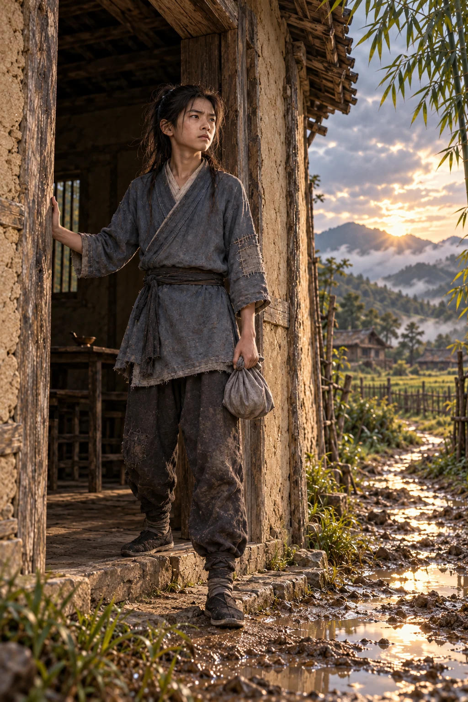
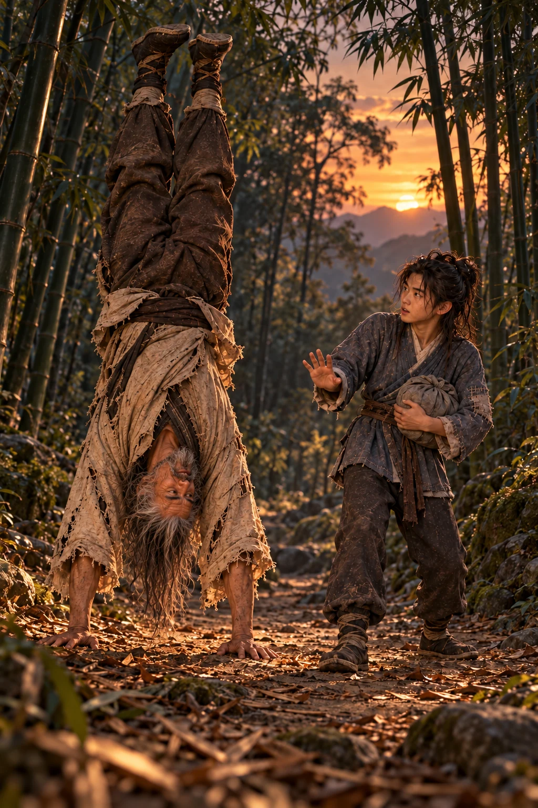
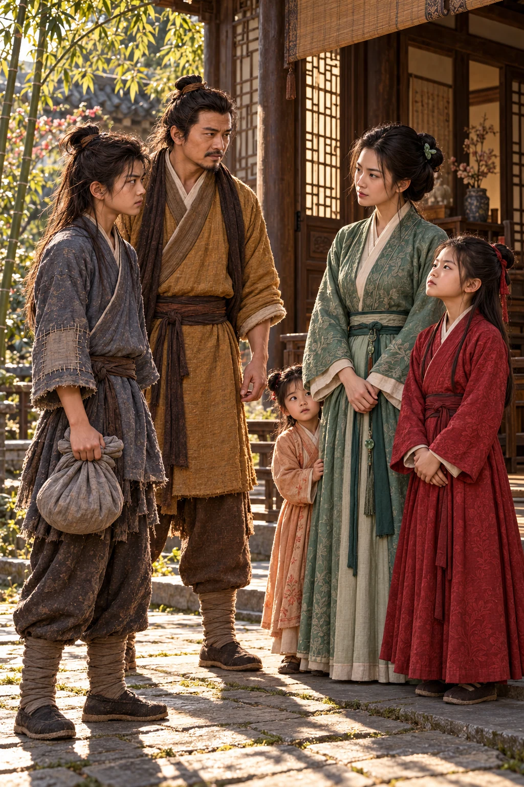
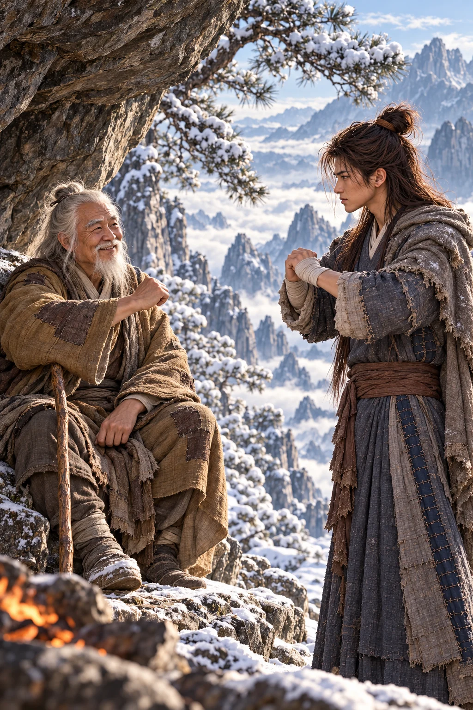
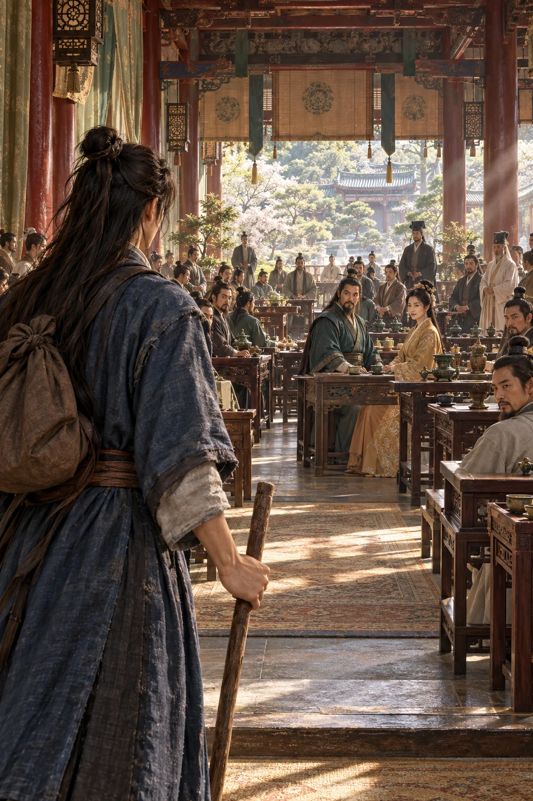

Fanfiksi The Return of the Condor Heroes
Saga
Dani Moan
Dari rumah yang sunyi menuju dunia persilatan, Dani mencari tempat untuk pulang. Bersama Xiaolongnü, ia menemukan cinta yang harus dipertahankan di tengah dendam, kehilangan, dan tuntutan kehormatan.
Karya fanfiksi tidak resmi, terinspirasi dunia The Return of the Condor Heroes karya Jin Yong dan serial 2014, dengan tokoh Dani Moan serta lore tersendiri.
Edisi revisi · Diperbarui sampai Bab 21
Daftar bab
21 bab tersedia- 01

Rumah yang Kehilangan Suara
Sebuah rumah kosong, kenangan keluarga, dan langkah pertama meninggalkan yang tersisa.
± 16 menit membaca
- 02
Malapetaka di Kediaman Lu
Pertemuan singkat menjadi malapetaka ketika Li Mochou menagih dendam kepada keluarga Lu.
± 13 menit membaca
- 03

Ayah di Jalan Terbalik
Di jalan, Dani bertemu seorang lelaki dengan pikiran kacau dan kasih sayang yang sulit dimengerti.
± 12 menit membaca
- 04

Di Bawah Atap Keluarga Guo
Sebuah keluarga menerima Dani; rasa curiga dan harga diri segera menguji tempat barunya.
± 16 menit membaca
- 05
Quanzhen dan Pintu Makam
Janji sebuah perguruan gagal melindungi Dani; seorang pengasuh dan pewaris makam memberinya jalan lain.
± 17 menit membaca
- 06
Janji di Bawah Tanah
Empat tahun pengajaran berujung pada luka, pengepungan makam, dan sebuah pilihan yang mengubah sumpah.
± 13 menit membaca
- 07
Rumah yang Mereka Pilih
Jubah yang dijahit bersama, dunia di luar gunung, dan kepulangan yang dipilih di tengah hujan.
± 13 menit membaca
- 08
Yang Tak Sempat Dikatakan
Kedatangan ayah angkat, serangan seorang kenalan lama, dan dua ingatan yang tidak bertemu pada pagi hari.
± 13 menit membaca
- 09
Di Hadapan Iblis Merah
Pencarian Xiaolongnü membawa Dani kepada Wushuang dan dendam keluarga Wanyan. Seorang penolong tanpa nama membuka jalan menghadapi Li Mochou.
± 14 menit membaca
- 10

Dua Nama di Bawah Salju
Di pegunungan salju, pencarian Dani mempertemukannya dengan dua tetua, persaingan lama, dan warisan yang mahal.
± 13 menit membaca
- 11

Di Hadapan Dunia Persilatan
Pertemuan Pahlawan mempertemukan kembali Dani dengan orang-orang yang ditinggalkannya. Sebuah janji harus dijawab di hadapan dunia.
± 21 menit membaca
- 12
Harga Sebuah Pertolongan
Dani dan Xiaolongnü melangkah keluar dari pertemuan. Ancaman terhadap keluarga Guo menguji pilihan mereka dan harga sebuah pertolongan.
± 21 menit membaca
- 13
Bayang Ayah, Benih Dendam
Dalam perawatan seorang penolong lama, Dani menemukan kehangatan dan kabar yang mengguncang kepercayaannya. Ancaman Li Mochou membawa mereka ke sebuah bengkel.
± 21 menit membaca
- 14
Bunga Cinta, Harga Sebuah Nyawa
Di lembah yang memelihara bunga beracun, Dani menemukan perempuan yang dicarinya sedang bersiap menjadi pengantin orang lain.
± 25 menit membaca
- 15

Nyawa yang Tak Jadi Ditagih
Di Xiangyang yang dikepung, Dani harus memilih antara harga penawar dan orang-orang yang memanggilnya keluarga.
± 27 menit membaca
- 16
Tangan yang Pernah Menolong
Pertengkaran memutus lengan Dani. Kepergiannya tidak diketahui keluarga Guo, dan malam mempertemukannya dengan Huodu di sebuah tebing.
± 16 menit membaca
- 17

Pedang Berat, Hati yang Belum Sembuh
Kondor menyelamatkan Dani di tepian sungai dan membimbingnya mempelajari pedang berat. Di luar lembah, kabar kematiannya memperdalam luka keluarga Guo.
± 14 menit membaca
- 18

Orang yang Telah Dikabarkan Mati
Dengan jubah kelabu dan pedang berat, Dani kembali menolong bayi keluarga Guo. Sementara itu, jejak pengkhianatan membawa Xiaolongnü dan Zhou Botong ke dalam jebakan.
± 14 menit membaca
- 19

Di Hadapan Langit dan Leluhur
Di Quanzhen, orang yang dikabarkan mati kembali ketika Xiaolongnü hampir kehilangan nyawa. Di tengah kepungan, mereka menuntut kesempatan untuk tetap bersama.
± 20 menit membaca
- 20

Racun di Rumah Mereka
Di Makam Kuno, Dani dan Xiaolongnü mulai berharap dapat hidup tenang. Kedatangan para pencari Polu mengubah rumah mereka menjadi tempat pertaruhan nyawa.
± 15 menit membaca
- 21

Tujuh Hari
Pondok bersalju memberi Dani dan Xiaolongnü kesempatan membayangkan hari tua. Amarah seorang biksu dan batas tujuh hari membawa mereka kembali ke Lembah Tanpa Cinta.
± 17 menit membaca